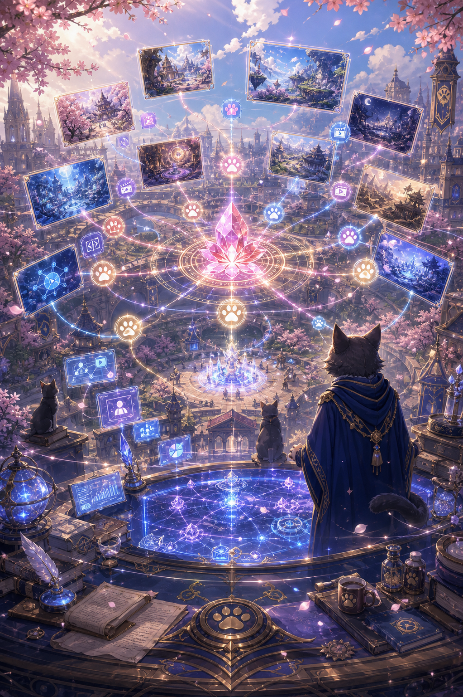

增长闭环 Growth Loop
一人公司通过 Agent 网络获得持续生产、宣发和复盘能力。An OPC gains production, campaign and feedback capacity through Agents.
主理人保留方向和质量判断，Agent 承担可规模化的生产与分发任务，合作伙伴可以在内容、测试、渠道和商业判断上贡献价值。
OPC 中间件 OPC Middleware
Third Academy Agent Hub 把公司工作流沉淀为可执行的操作层。Third Academy Agent Hub turns company workflow into an executable operating layer.
控制台把目标、协议、Agent、工具调用、验收、宣发、财务和复盘放在同一张运行面板中，帮助合作方理解公司如何持续把创意转化为产品资产和市场信号。
控制台入口 Console Entry
主理人用一个面板管理产品周期。The owner manages product cycles from one panel.
每个周期以业务目标开始，进入任务协议、Agent 编排、MCP 工具调用、人工验收、AI 宣发、平台分发和财务复盘，最终回到下一轮产品组合决策。
Agent 系统 Agent System
每个 Agent 都服务于明确的公司资产目标。Each Agent serves a clear company asset goal.
资产目标让内容、美术、代码、测试、宣发和财务分析可以并行推进，并在主理人审阅后进入下一轮增长。
生产 Agent 扩大内容和技术产能。Production Agents scale content and technology capacity.
它们把协议转化为概念图、精灵表、地图、UI、服务端功能、对话、数据文件、测试报告和部署说明，持续增加可复用资产。
策划 Agent Planning - 产品方向、功能范围和里程碑切片
美术 Agent Art - 主视觉、角色资产、地图、UI 素材和未来轮廓
代码 Agent Code - Phaser 前端、Python 后端、同步逻辑和部署检查
测试 Agent QA - 语法检查、浏览器检查、多人验证和问题报告
体验评估提升产品质感和合作信心。Experience review improves product quality and partner confidence.
主理人与精选协作者测试游戏、判断情绪质量、审阅公开资产，并形成面向下一轮版本和宣发的改进建议。
试玩 Playtest - 移动、战斗手感、可读性、新手体验和多人体验
监督 Supervision - 安全、品牌契合、准确性、受众语气和发布风险
创意审阅 Creative Review - IP 一致性、故事质量、视觉完成度和伙伴反馈
决策 Decision - 继续、修改、公开、投入、合作或转向
宣发 Agent 把版本转化为可传播内容。Campaign Agents turn builds into shareable content.
工作室已经跑通 AI 视频创作与 Agent 辅助分发路线，可为小红书等短视频和图文平台准备差异化内容版本。
视频 Agent Video - 预告片脚本、分镜、AI 片段、切条和封面帧
文案 Agent Copy - 平台标题、钩子变体、开发日志和合作邀约
分发 Agent Distribution - 在主理人审核下发布小红书等平台内容
洞察 Agent Insight - 评论、互动、受众问题和宣发总结
财务反馈让增长更可持续。Finance feedback makes growth more sustainable.
宣发成本、素材成本、基础设施成本、转化信号和商业化假设会进入下一轮产品、预算和合作决策。
成本追踪 Cost - 算力、工具、宣发资产、托管和外部协作需求
营收信号 Revenue - 试玩意愿、付费测试、赞助、授权或投资兴趣
组合分配 Portfolio - 扩展当前 IP、测试未来轮廓或收缩范围
现金流逻辑 Runway - 将每个周期转化为可衡量的资源配置决策
市场与财务指标 Market & Finance Metrics
增长指标让 IP 价值、宣发效率和商业机会更清晰。Growth metrics clarify IP value, campaign efficiency and business opportunity.
每个周期都会积累产品反馈、社群兴趣、成本数据、宣发表现和潜在合作线索。

增长工作流 Growth Workflow
每一次发布都会扩大 IP 的可见度和合作半径。Every release expands IP visibility and partnership reach.
公开发布、AI 视频、试玩会话和协作者反馈会形成结构化信号。Agent 汇总信号，主理人做产品组合决策，下一轮协议再更新版本、宣发或预算。